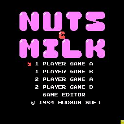
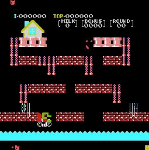

これはX680x0用の高速ファミコンエミュレータです。
以前ファミコンのコードを68コードにコンバートするという方法で
いくつかのX680x0用ファミコンエミュレータが存在しました。
しかし、これは各ソフト毎にデータとプログラムとを分析しなければならず
また、その分析が不十分ゆえにうまく動作しない部分があったりしました。
しかし、このFAMIXは高速であるにもかかわらず、最近の高速マシンでやているような
バイナリインタープリタと言えるような方法で動作しています。
これならROMデータを差し換えるだけで、即そのゲームを動かすことができます。
エミュレーションのコアとも言えるMPUエミュレーションをフルアセンブラで
記述しています。しかもワークエリアはとれる限り限界までレジスタ上に置く
など、ギチギチの最適化を施してあります。
また、エミュレーションにおいてかなりの負担となると思われる画面処理を
できる限りX680x0のハードにやらせているのも高速化に繋がっています。
ファミコンのグラフィックはX680x0のBGに、スプライトはスプライトに、と
X680x0のハード特性がもっともよく活かされるように作られています。
030マシンじゃなくても十分な速度がでます。
できればRED ZONEクラスのパワーが欲しいところですが、
XVIやクロックアップした旧マシンでもそこそこ動くはずです。
ファミコン側の割り込みのタイミングはきちんとX680x0側のVSYNCと
同期してとられるため、遅いマシンで動作させた時には処理全体が遅くなる
というよりは、ゲームの処理落ちが発生しやすくなるといった状態になります。
逆に言えば、もともとファミコン上で処理速度に余裕をもって動いていたソフト等
は遅いマシンを使っても正確な速度で動作可能ということです。
RED ZONEクラスになると、ほとんどのゲームがきちんとした速度で動作します。
ずばり未完成だからです。あまりにもギチギチに最適化しすぎたため、バグが
とりにくくなっています。なんとかして完成させるつもりですが、しばらく
時間がかかるかもしれません。とりあえずバグ出しのために別のプラットフォームで
移植作業を進めてます。なにせプログラムミスなのか、ファミコンの仕様を取り違えて
いるのかすら判断つかない状況なもので・・・。
連絡さえ頂ければ、再配布不可、デバッグにはできるだけ協力するという条件で
メール等で御送りします。デバッグに協力といっても使ってて気付いたことが
連絡をくれる程度でかまいませんし、ちょっとした動作報告をしてくれるだけでも
かまいません。感想や励ましのメールなどでもおっけ～です。
現在のデバッグ版なら、デバッガーが内蔵されているため、ファミコンのソフトを
１命令ごとにトレースしたり、ディスアセンブルリストを表示させたりできるため
その手のものが好きな方だと楽しんでいただけるかもしれません。
とりあえず現在の画面スナップくらいははっておきましょう。
まだ、スプライトが化けていたり、色が変だったりします。
|  |  |
|---|---|
|
ナッツ＆ミルク（タイトル画面） |
ナッツ＆ミルク（ゲーム中） |
新しいCPUエミュレーションのアルゴリズムが完成しました！
あとはプログラミングするだけです。今度のは速いですよぉ（笑）。
なんといっても動的再コンパイルの技術を応用しているので、劇的な高速化が望めます。
グラフィック周りについても、ある程度予測して事前コンバートをかけるので更に高速。
従来比200%くらいになるかも。10MHz無改造マシンでも充分に動作する恐れあり（ぉ。
しかも、以前ほど闇雲なインライン展開がなくなりそうなので、
デバッグの際の見通しも良くなりそう。
学校のテストが終わったらプログラミングに入ります（笑）。
フフフフフフ・・・
テスト中はいろいろなことを思い付きます。えぇ。
更に高速化されたアルゴリズムが完成してしまいました。
理論的には、無改造のX68k(10MHz)でファミコンやゲームボーイまでを
オリジナル以上のパフォーマンスで再現できます。これは速い！
具体的には、
・静的多重コンパイル
・動的再コンパイル
・事前構造変換
という勝手に命名したものも含む（笑）３本柱でいきます。
エミュレータの構造に詳しい人なら名前から何をするのかだいたい想像つくかな？
「静的多重コンパイル」は盲点でした。思い付いた時、「やられたっ」って感じでした。
なかなか美しい手法っすよ。はやくテスト終われ！